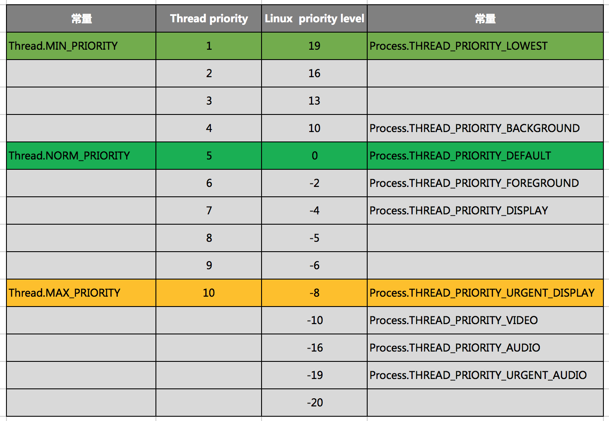

线程优先级
在Java中并发编程用到的线程Thread，可以设置优先级Thread#setPriority，不过在Android系统中，官方文档推荐的优先级处理却不是Thread这个API，而是Process#setThreadPriority。
关于这个问题曾经困扰了一阵。
举个Framework的实际例子：
mWorker = new WorkerRunnable<Params, Result>() {
public Result call() throws Exception {
mTaskInvoked.set(true);
Result result = null;
try {
Process.setThreadPriority(Process.THREAD_PRIORITY_BACKGROUND);
//noinspection unchecked
result = doInBackground(mParams);
Binder.flushPendingCommands();
} catch (Throwable tr) {
mCancelled.set(true);
throw tr;
} finally {
postResult(result);
}
return result;
}
};
优先级定义
关于Process的接口，可以从接口文档知道：
- 优先级从-20至19，优先级递减
- 默认优先级为0
- 常用后台优先级为10
这个优先级的定义和划分非常细致，可以取值可以映射到Linux系统层，所以也称这个优先级是Linux priority level。
Android提供这套定义，其实也比较好理解，毕竟Android OS本身就是基于Linux系统的。
Java作为跨平台的语言，他定义的线程优先级就比较粗粒度了：
- 优先级从0只10,优先级递增
- 默认优先级为5
在前面的例子中，我们看到传统的AsyncTask异步任务接口，他是默认为工作线程强行指定了低于主线程（默认值）的优先级
- 默认为Process.THREAD_PRIORITY_DEFAULT，即0
- AsyncTask为Process.THREAD_PRIORITY_BACKGROUND，即10
同样出自Google的Volley框架也设置了优先级，并且也是利用的Process接口。 如果分析过RxJava框架，你可能会发现，这个框架并没有设置线程优先级，所以不涉及两种API的调用。
Thread.setPriority vs Process.setThreadPriority
那么这两者设置效果一致么？
之所以抛出这个问题，是因为笔者在设计一些线程池优先级的时候常用的是Thread.setPriority。
为了验证他们的优先级，有两个办法，
- 可以做一些实现，评测不同方式的效果
- 深入挖掘两者的native层代码设置
第一点其实并不是很好操作，优先级观测有困难，不过通过属性判断也可以作比较 第二点只需要找到c代码汇总Thread的设置即可: Thread.c
总结来说两种API最终都是设置了c层thread的优先级，因此可以认为效果是类似的，但两者的api级别划分粒度不同。
通过一段小程序，我们可以建立两种优先级的映射关系：
for (int a = Thread.MIN_PRIORITY; a <= Thread.MAX_PRIORITY; a++) {
Thread thread = new Thread(new Runnable() {
@Override
public void run() {
int p = Process.getThreadPriority(0);
Log.i("Thread", Thread.currentThread().toString() + ",p=" + p);
}
}, "Java#" + a);
thread.setPriority(a);
thread.start();
}
执行完这段循环后，跟日志我们可以得出下图：

这里有一个注意点，获取linux priority level不可以用Thread.getPriority，这个值仅仅是java的映射，需要通过Process接口获取，传入线程id可以获取对应线程的优先级。
同样线程id也不可以通过Thread.getId获取，这个值也不是真正的id，可以传0或者通过Process.myTid()获取。 我们创一个线程取名为JAVA,通过ps过滤出app的所有线程(pid为3409),可以看到JAVA线程的id是3452，但是同Thread.getId得到的是2063
aven-mac-pro-2:senior aven$ adb shell ps -T|grep 3409
u0_a88 3409 3409 1533 1433540 78636 SyS_epoll_wait 0 S cktons.rxthread
u0_a88 3409 3414 1533 1433540 78636 futex_wait_queue_me 0 S Jit thread pool
u0_a88 3409 3415 1533 1433540 78636 do_sigtimedwait 0 S Signal Catcher
u0_a88 3409 3416 1533 1433540 78636 poll_schedule_timeout 0 S JDWP
u0_a88 3409 3417 1533 1433540 78636 futex_wait_queue_me 0 S ReferenceQueueD
u0_a88 3409 3418 1533 1433540 78636 futex_wait_queue_me 0 S FinalizerDaemon
u0_a88 3409 3419 1533 1433540 78636 futex_wait_queue_me 0 S FinalizerWatchd
u0_a88 3409 3420 1533 1433540 78636 futex_wait_queue_me 0 S HeapTaskDaemon
u0_a88 3409 3421 1533 1433540 78636 binder_thread_read 0 S Binder:3409_1
u0_a88 3409 3426 1533 1433540 78636 binder_thread_read 0 S Binder:3409_2
u0_a88 3409 3447 1533 1433540 78636 futex_wait_queue_me 0 S Profile Saver
u0_a88 3409 3452 1533 1433540 78636 futex_wait_queue_me 0 S JAVA
u0_a88 3409 3454 1533 1433540 78636 SyS_epoll_wait 0 S RenderThread
u0_a88 3409 3455 1533 1433540 78636 futex_wait_queue_me 0 S RenderThread
u0_a88 3409 3457 1533 1433540 78636 futex_wait_queue_me 0 S hwuiTask1
u0_a88 3409 3458 1533 1433540 78636 futex_wait_queue_me 0 S hwuiTask2
小结
- Thread和Process都可以正确设置线程的优先级
- 通过映射关系，可以实现几乎一致的优先级
- Android提供的Proceed划分更清晰，建议优先使用
- 两种设置时机不同，Process需要在Thread得到执行的时候即run的第一行设置，如果觉得不方便可以考虑用Thread的提前设置